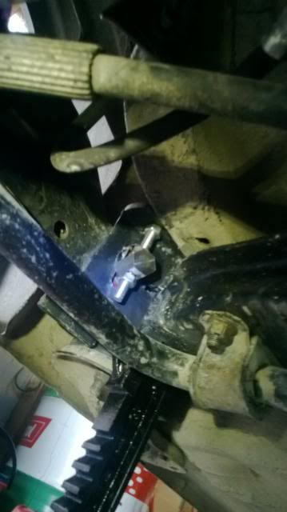

-
[quote]adamvann3 wrote:Prior I had half a degree of toe. So if your in that range you should be good. How much toe did you have?Originally posted by 862sikMy Build Thread -
Is Gary's site down? I can't seem to access any portion of it. -
Did he go out of business?The best engine in the world is the vagina, it takes any size piston, it's self lubricating, starts with one finger, and every four weeks it does its own oil change. It's just a pity that the management system is so f**cking tempermental. -
Hi Guys
Specifically to Gary or Colton
Did either of you run into an issue where extra trimming was required because the camber mod fouled on the chassis rail ?
I am using Pro thane bushings, and i have just completed my swap but i had to cut away the RED part that you can see on the picture(Gary's picture)
Just wondering if you guys had to do this trimming too.
Otherwise it all fits up great and has no other issues.85 Turbo Slick Top
__________________________________________________ _____ -
http://www.garymolitor.com/300zx/300zxmainpage.htmWindzer;265417 wrote: Is Gary's site down? I can't seem to access any portion of it.
1988 300ZX Turbo, Shiro Special #760
1988 300ZX Turbo Automatic (wife's car)
1991 Hard-body 2WD
http://zccw.org/zccw/?page_id=1215 -
Oh, Geez. Yeah. After test fitting, I found that corner needs to be trimmed back.james;322894 wrote: Hi Guys
Specifically to Gary or Colton
Did either of you run into an issue where extra trimming was required because the camber mod fouled on the chassis rail ?
I am using Pro thane bushings, and i have just completed my swap but i had to cut away the RED part that you can see on the picture(Gary's picture)
Just wondering if you guys had to do this trimming too.
Otherwise it all fits up great and has no other issues.
I also made anotherl changes to provide additional adjustment.
I've set that project aside while I work on some needed home restoration.
I'll update the installation in total once complete. -
Gary I will have some installation pictures up soon in my Build thread, I have about 2mm clearance to the chassis rails on mine, but once its trimmed its all fine.
When its on the car it dosn't look funny, but with the cross member on the ground it looks a bit weird85 Turbo Slick Top
__________________________________________________ _____ -
http://www.garymolitor.com/300zx/cam…/cambermod.htmWindzer;265417 wrote: Is Gary's site down? I can't seem to access any portion of it. -
Picture of it all installed.85 Turbo Slick Top
__________________________________________________ _____ -
What do the parts look like before installation? -
They look pretty much identical to the picture with the read hatch i drew in MS paint.1artworkz;323517 wrote: What do the parts look like before installation?
From memory the measurements were 35mm from the edge at the radius edge and about 5mm at the tapered end.
Basically what i did was fit the cross member until it hit the chassis rail and scribe a line using the chasis rail as a guide85 Turbo Slick Top
__________________________________________________ _____ -
I know its been a while but i finally got around to taking photo's of my adjuster nuts and bolts.
Toe Side
[URL
Camber Side

At my Alignment I'm going to shoot for 1.5deg all round and give it a try.85 Turbo Slick Top
__________________________________________________ _____ -
Just a word of warning about this mod.
If you decide to do the Modifed capscrew / toe adjuster like i did you will notice that the Toe bolt on the RIGHT Hand side can not be installed with the Diff in place.
There is no way to get that bolt in there unless you lift your diff u p and out of the way.
Alignment specs to be posted up soon.85 Turbo Slick Top
__________________________________________________ _____ -
Alignment sheet for Adam Van & others
they only did a quick tune up for me, when i go back i will get them to be a bit fussier with it
85 Turbo Slick Top
__________________________________________________ _____ -
Damn, great work and a very impressive/perfect specs for a semi trailing arm (especially lowered!). Congrats on all the hard work!
When you go back, increase your front camber to -2 to -2.5. My last alignment I increased from -1.7 to -2.5 and was pleased with the turn in response.86na - BlueZ
Shiro #366 - Kouki Monster
85t - Mr Tickles

Copyright © 2006–. All rights reserved. Privacy Policy